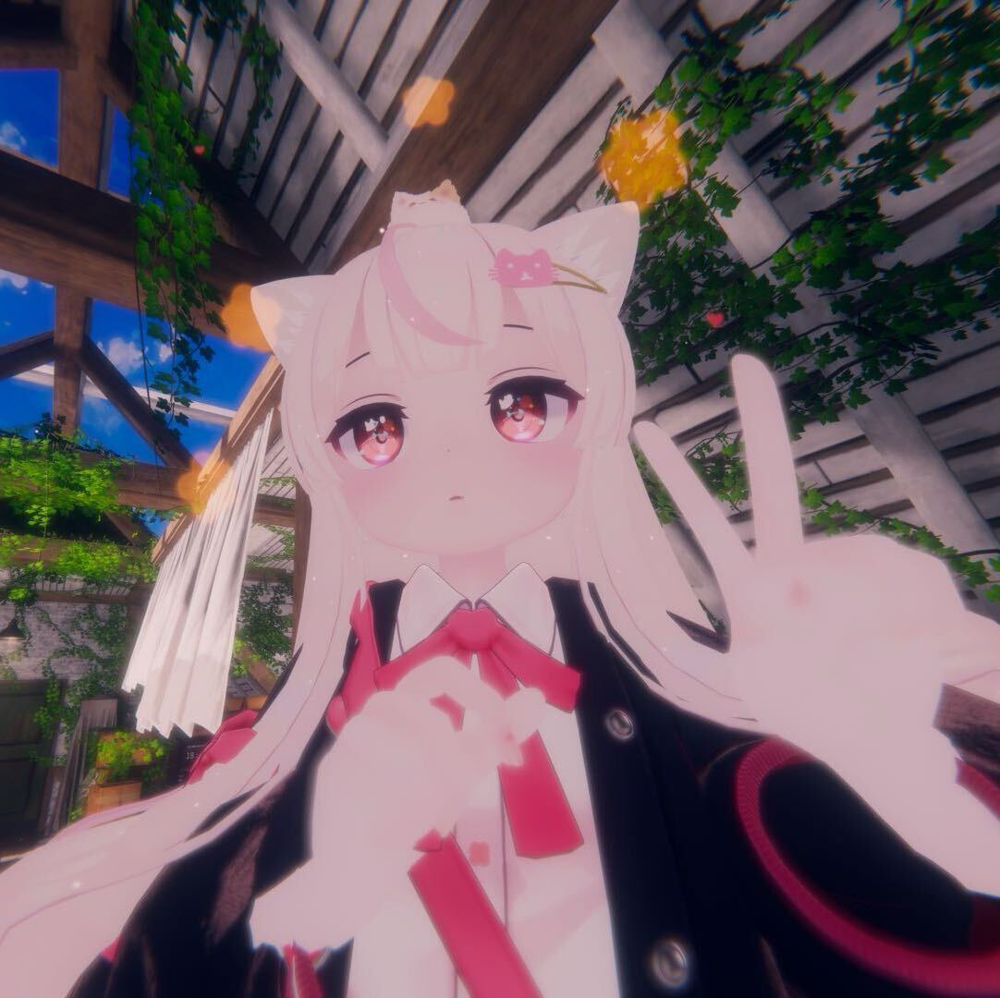
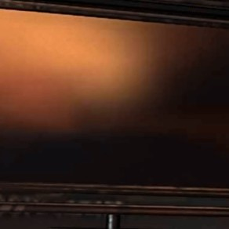
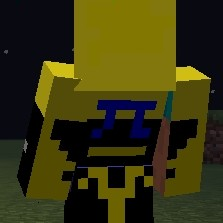

关于我们
青岚工作室是由一群对游戏充满热爱的学生组成的团队。我们不致力做出3A大作，只求做出好玩的游戏。
我们还涉及多个领域，包括软件开发，网站开发，AI开发，黑客技术 网络安全等。
项目介绍
---游戏类---
RunForYourLife-以后室为主题的3D第一人称逃脱游戏
CirDom1&2-用Python Tkinter库实现的4K音游,支持制谱
1955-逃离番茄的第一人称跑酷游戏,线性关卡
Pong:Re-重制版的Pong,融合现代UI和动画
番茄大陆冒险传-融合弹幕躲避和回合制战斗的RPG游戏
塞尔达传说_奇幻森林-仿制初代塞尔达传说的同人作品
极限竞速-开放世界赛车游戏
傀儡战争-skibid toilet同人“傀儡战争”的游戏版
---软件类---
EncryptMessage-由Python编写的消息加密器,原创加密算法
WechatAutoResponse-由Python编写的微信自动回复工具
KawaiCmd-CMD重制版UI,替换CMD输出语言风格,可配置
CCB生成器-通过遍历字库来生成中文中所有的CCB组合,支持快速查找
---AI类---
Takeuchi_Ayaka-基于Qwen1.5-4B实现的互动式二次元LLM（女鹅）,后端Python前端Unity Live2D SDK
ImageReconization-女鹅的附属模型,可以标识画面中的元素,基于OpenCV级联识别器
SelfAskSelfAnswer-用于生成持续双人对话的程序,支持修改人设,背景,相遇事件等
AnswerGenerater-基于Qwen1.5-4B的多批量答案生成程序,适用于拟造评价等场景
---黑客类---
FastClicker-由Python编写的连点器,目前测试10000+cps可行
“死神之镰”木马病毒-由Python编写的木马病毒,可以执行命令,移动鼠标等
刷屏脚本-由Python编写的自动化刷屏脚本
TLhack-MC脚本,旋转攻击,自动搭路等
弹窗病毒-无限生成弹窗的病毒,通过撑爆内存造成电脑死机
逃离后室自动打字脚本-在游戏“逃离后室”中自动打字
成员介绍
【--------工作室成员--------】
【青岚_leo】
青岚工作室创始人,负责程序和设计部分,对工作充满热情,但有时会因为灵感太多而不能专注于同一个项目
【苏醒cn】
青岚工作室的美工,负责美术部分,经常神秘消失,非常喜欢萨卡班甲鱼（
【zdbcn】
不知道啥分工,啥都能干一点,主要提供灵感和修改意见,以及为项目做测试
【 】
是的他名字就是空白,主要提供灵感和剧情,有时会提供工具支持 和当苦力
【--------外包项目 甲方 支持者-------】
【...】
为项目“傀儡战争”提供剧情和美术支持,是skibid toilet同人“傀儡战争”的作者 是“1955”和“番茄大陆冒险传的灵感来源
【wanglan】
早期为项目“Nemo审判战”提供灵感和玩法设计,参与了一部分制作
加入青岚工作室的行列吧!
如果你对游戏开发抱有极大的热情，不管有没有技术，都可以加入我们！我们会始终在游戏开发的道路上前行！
哦对，还有...
急招美工
啊啊啊只要是会美术的不管是场景设计角色设计2D美术3D概念插画师场景设计抽象派写实派优化二次元欧美精污中式平涂厚涂赛璐璐都给我来啊啊啊啊啊啊啊啊啊啊！！！！
联系方式
欸您猜怎么着我其实没想拉人进工作室，如果是真的想了解，请关注B站账号谢谢喵！
注意！此网站还在施工阶段，已有内容不代表最终品质